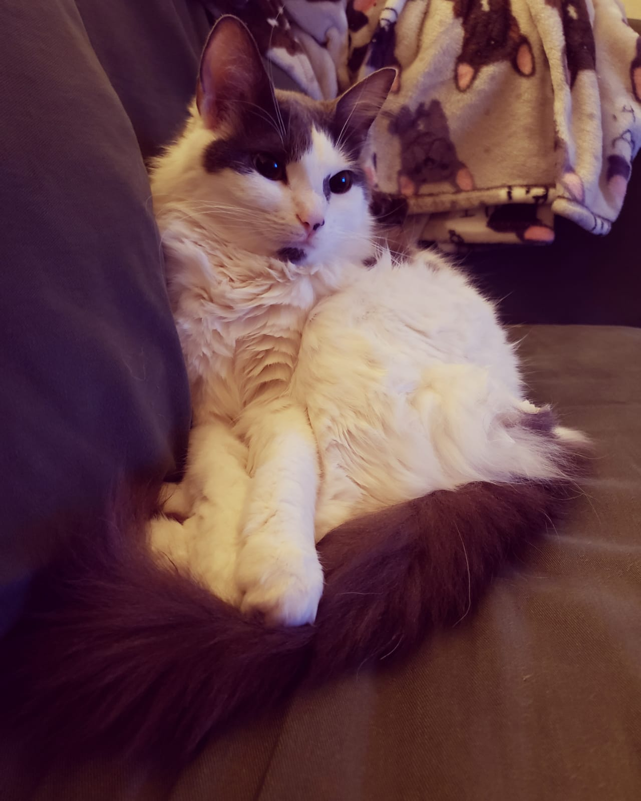

Why This Project?
40% of dogs are obese …
46% of dogs and 39% of cats now die of cancer…
Heart, kidney and liver disease are epidemic…
Here are 10 important things you may not know about pet food:
#1 Commercial Pet Food Is “Fast Food”
- Heavily-processed fast foods (burgers, fries, tacos, etc.) as a big diet component can cause major health problems in people. How can fast foods be good for pets?
Only pet food manufacturers think this nonsense makes sense. Dogs and people share roughly 75% the same genetic makeup, and we have similar nutritional needs. What we’re doing to our own health with processed foods, we’re also doing to our dogs. And it’s happening faster.
#2 People Food Is Good For Pets
- Despite what you’ve heard from friends, vets and pet food manufacturers, wholesome ”people food” is good for pets. People food is only bad for pet food makers.
The same fresh, nutritious foods people eat can offer your dog the nutrition he needs and save you a mountain of vet bills. It just takes a little education to learn the small differences between human and canine nutritional needs. (Hint: no onions, grapes or raisins. Rinse off rich spices and sauces. Go easy on carbs and avoid wheat and corn.)
#3 Don’t Presume The Food Your Vet Sells Is A Superior Product

- Veterinarians, like medical doctors, learn relatively little about nutrition in school.
Much of what they do learn comes directly from pet food company vets, sales reps, articles, studies, and seminars.
#4 The Quality Of Processed Commercial Foods Is Suspect
- Pet food may legally contain “4-D” meat: meat from dead, dying, diseased and disabled animals.
Add a little road kill, mill floor sweepings labeled as grain, and corn contaminated with high levels of pesticide (yes, really) and you have a recipe for ill health. The cheaper the food, the cheaper the ingredients, the worse the nutrition.
Read the labels!
#5 Kibble Does Not Clean Teeth
- Almost all dogs and cats age three and over have dental diseases. Most of these pets eat kibble. That should tell you something.
#6 “Complete And Balanced” Does Not Mean “Optimum”
- “Complete and balanced” means that a food meets minimal theoretical health requirements for the average dog.
Food boasting that it conducted Feeding Trials often just test only the lead product in a line of foods. Trials, too, are for only a small number of dogs for a short period of time. Over time, nutrient and enzyme deficiencies are inevitable.
Of course, complete and balanced is better than not complete and balanced, but again, better does not mean good.
- Imagine eating corn, rancid fat and chicken wings (without meat) every meal of your life, with the same mix of cheap vitamins and minerals added…
Nutritionists urge people to eat a variety of foods, both for improved nutrition and also to prevent allergies. Pets need variety, too.
But variety can cause gastrointestinal upset in dogs, right?
In the short run, yes. Nutritionally-deprived animals have sick guts. In fact, intestinal upset when switching foods is a sign your dog needs more variety. Once good nutrition has healed a dog’s digestive system, the dog can eat different foods every meal — just as people do. Just switch foods gradually over several weeks while your dog’s gut heals.
#8 Kibble Is Not Better Than Canned
- Whereas canned food is preserved by the process of canning, most kibble is preserved artificially. (Ever contemplate how much preservative must be required to retard spoilage of food left out all day?)
Kibble begins as a dry cooked meal whereas canned food is canned fresh. Kibble is exposed to more heat than canned (destroying nutrients). Worse yet, kibble is linked to kidney and bladder problems in cats, and to bloat, a deadly problem especially for large, broad-chested dogs. It’s also dehydrating. Of course, canned isn’t perfect either. Fresh is best, raw or cooked. Next best is frozen prepared food and then dehydrated and freeze dried foods, all available at better pet stores.
#9 Some Common Foods Can Be Hazardous To Canine Health
- Cooked bones and rawhide chews can cause major health problems requiring emergency surgery.
Wheat-based treats can bring on allergies. (Consider Coconut Chips as an alternative.)
Onions, grapes, raisins, chocolate, the article sweetener Xylitol and other common foods can be toxic for dogs and must be avoided.
#10 Corn Kills
- Most kibble is loaded with corn, a cheap filler. Unfortunately, the corn isn’t the luscious kind you and I eat.
It’s feed corn (like cattle eat), or cheap feed corn remnants. Even corn meal dust counts as corn. The corn may even have been condemned for human consumption, there being no upper level of pesticide contamination for pet foods.
If that weren’t bad enough, corn is fattening. Any wonder so many dogs and cats are obese and suffer from diabetes?
Source: https://www.dogsnaturallymagazine.com/dog-food-ten-scary-truths/